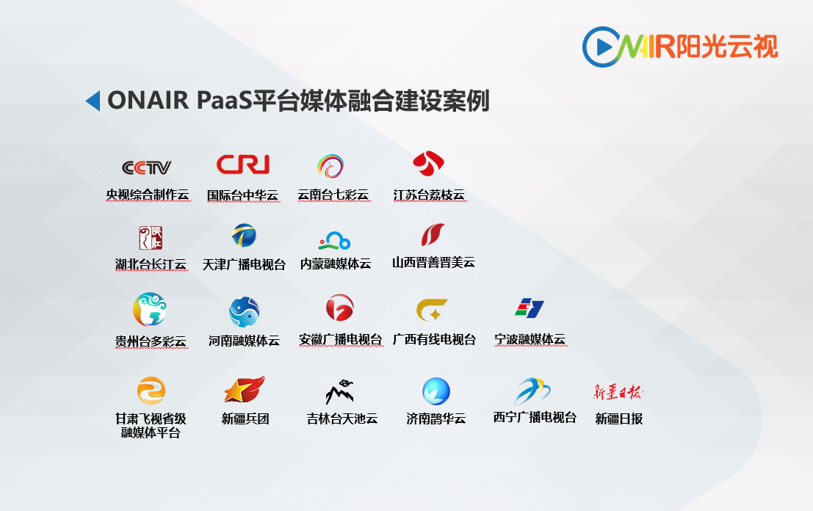

喜讯！阳光云视荣获2021广播电视科技创新奖
2022-03-25 10:00:00
日前，中国广播电视设备工业协会公布了2021广播电视科技创新奖评奖结果，北京阳光云视科技有限公司的凌云媒体PaaS运营管理平台3.0荣获2021年广播电视科技创新奖。该奖项旨在奖励在推动广播电视设备科技创新中做出重大贡献的产品、企业和个人，调动广播电视科技工作者的积极性和创造性，促进我国广电行业科学技术的发展。阳光云视旗下主打的智能云媒资、熠云直播平台先后荣获2019年和2020年广播电视科技创新奖。
阳光云视公司已为全国18个中央、省级媒体机构搭建了凌云媒体PaaS运营管理平台，其中多个项目已完成了二期平台的升级改造工作。凌云媒体PaaS平台是基于云平台的松耦合架构和微服务的设计理念，致力于打造智慧媒体新生态，助力平台的稳定快速迭代和新业务的不断开展。

ONAIR PaaS平台媒体融合建设案例
凌云媒体PaaS运营管理平台除了提供对于视、音频业务支撑及媒体内容生产加工相关能力服务外，还提供了统一的标准化应用开发接口，供第三方生产工具集和能力集的快速注册，为广大合作伙伴和开发者提供音视频生产加工、管理发布等服务能力。凌云媒体PaaS运营管理平台还可以对于所提供的服务进行精细化的运营管理，提供统一的计量、计费机制，实现服务能力的平台化运营管理。
阳光云视从2014年成立至今，持续为广电及互联网行业提供一站式服务，致力于推动媒体生产能力的变革，助力传媒行业用户实现向融合媒体的转型升级，让融合媒体运营更轻松。我们会继续在广电领域深耕，坚持科技创新，设计研发出更多被客户认可的产品。